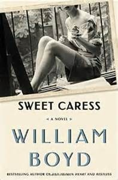

William Boyd’s Sweet Caress (Bloomsbury 2015) is a sweeping novel written in the voice of one English woman, Amory Clay—but in two different time frames. An epic story of one woman’s life, punctuated by her experiences with both World Wars, Vietnam, and the American counter-culture, makes up the larger narrative. The historical story is then punctuated by the shorter “journal” of the months leading up to Amory’s seventieth birthday. This double-vision brought into sharp focus by the main character, whose eye for detail has made her a successful photographer and story-teller.
One of the most notable aspects of this fine, leisurely novel is the very plausible voice of Amory herself. She is rather privileged in upbringing, though she falls on some hard times as she makes her way in the male-dominated world of art, but she is likeable—and believable. Readers may, in fact, forget that this novel was written by a man. Introspective and honest, Amory reveals herself to be ambitious without being completely career-driven and loving without being sentimental. Even her long affair with a married man—along with the unpleasant encounter with his wife—does not diminish Amory’s character, either moral or narrative. She has strong feelings, and she acts on them, but she is not unaware of the impact of her choices on her family and the families of others. She’s sensible and competent. As she says, “The fact that he was handsome and successful, selfish and self-absorbed . . . doesn’t reflect badly on me. . . .At certain periods in our live we—men and women—need exactly this type of person. . . . Then growing maturity tells you that this type of person simply will not do any more” (176).
Much of Amory’s life and many of her choices are affected by war—and those effects are largely brought about by men. Her father returns from World War I suffering from shell-shock (though she never calls it that), and shatters the family with his erratic behavior. This narrator does not spend pages describing warfare, at least early on. The damage is suggested by Amory’s matter-of-fact, understated descriptions:
My father, a clever boy, won an exhibition to Lincoln College, Oxford, and became a professional writer (his brother, Walter, died at the Battle of Jutland, 1915). . . .He had become thoroughly middle class; a successful writer of several well-received books married to a judge’s daughter, with three children, living in a large and covetable big house in the East Sussex countryside. And yet he was not entirely a happy man. And then the war came and everything went wrong. (16-17)
Everything, indeed, goes wrong, but years elapse in the meantime. By the onset of World War II, Amory is a working photographer, already with one obscenity charge behind her after taking photos in clubs in Berlin. She marries a WWII veteran, who is, like her father, traumatized from battle, and in her later years travels to Vietnam in part to recover her professional self. She asks herself later, “What was it that made me decide I had to go to Vietnam?” The answer is clear: “I really wanted . . . to confront warfare again. . . . War had shaped, directed and distorted my life in so many ways . . . that I think that the zeal I was feeling was an unconscious response to this deeper need. . . . wanted to experience something of what he had gone through but with my new knowledge—about him, about me—informing everything” (350-351).
Amory does not become a secondary figure, though some may prefer to see a character taking on the big battles of her era herself rather than experiencing them through others. Amory does not join the military and fight heroically, nor does she magically find herself face to face with any of the famous generals, prime ministers, or presidents. The “tell it slant” mode of this novel, in fact, adds an element of welcome realism. The repetition of “I remember” at the beginnings of paragraphs keeps the point of view clearly within Amory’s experience, but placing her at the margins of the great wars of the twentieth century provides a larger political framework for her personal story without creating another Forrest Gump.
Putting main characters smack in the middle of the monumental political events of a period is one of the great temptations of any historical novelist—and it can also be one of the great mistakes. Boyd avoids this error and so layers his work with cultural significance without trying the reader’s suspension of disbelief. The addition of many photographs, supposedly Amory’s work, as well as a number of catalogues, of lovers, books, photos, and family members, centers the book on Amory as a complete person in her own right, who has experienced the great cataclysms of her era without becoming engulfed by them.
So the twentieth century winds its bloody way to a close in Sweet Caress, as Amory’s birthday approaches. This other narrative, set on a small island near Oban in Scotland, neatly spliced into the more historically sweeping story, creeps to its conclusion. Amory is now a woman in her sixties, more or less retired and suffering from a troublesome neurological problem. She walks her dog Flam, visits the doctor, lunches with friends, and wards off the attentions of a local octogenarian. A careful reader will pick up clues along the way of how the novel will end, but this doesn’t diminish its power. Amory ends her story as she has told it, with calm intelligence and resolve. At the end, the “Many Lives of Amory Clay” become one, and though the conclusion is not happy, it is deeply satisfying. It’s quiet and inevitable, perfectly realizing both the title and the epigraph, an admonition to “feel life’s sweet caress.”